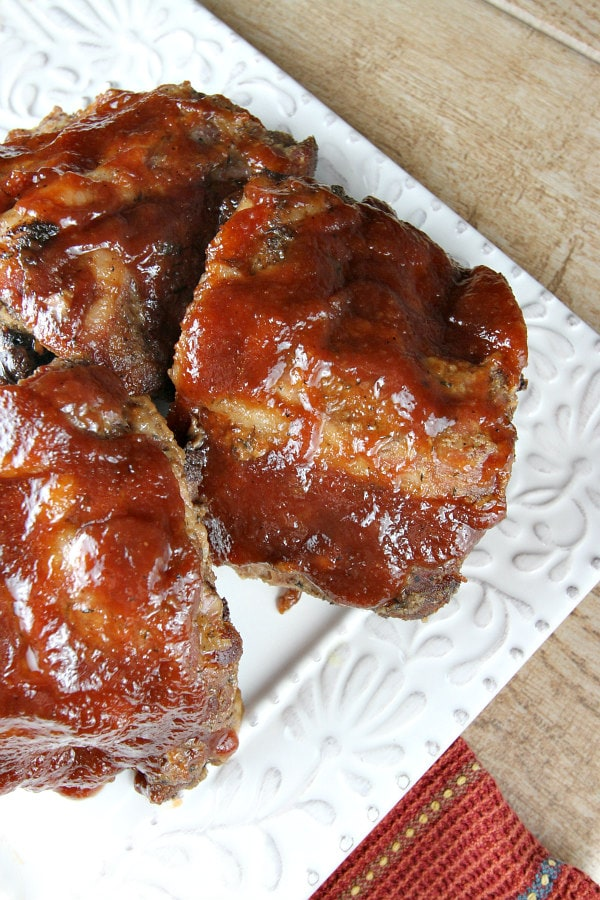

Homepage
Friends
Cooking
Resume
Cooking
Apple Smoked Ribs

Ingredients:
Ribs (1 rack)
Onion (1 sliced)
Apples (2 Sliced)
Apple Flavored BBQ Sauce (1 Jar)
Liquid Smoke (2 tbs.)
Simple Instructions
Place all ingrediants in a crock pot for 6 hours on low.